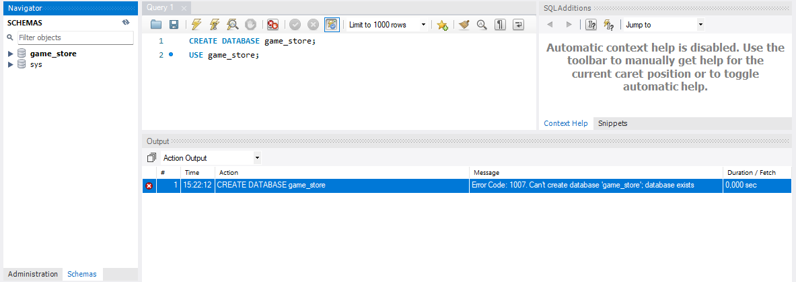
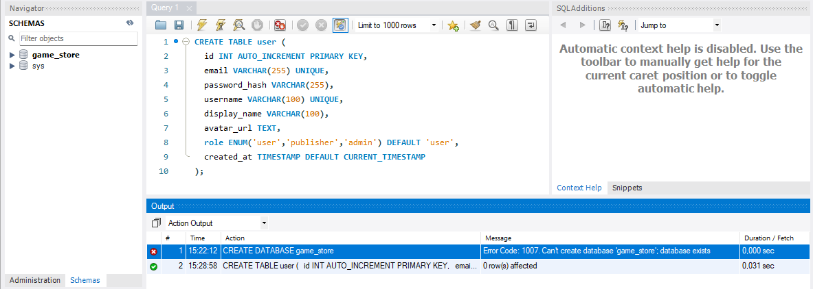
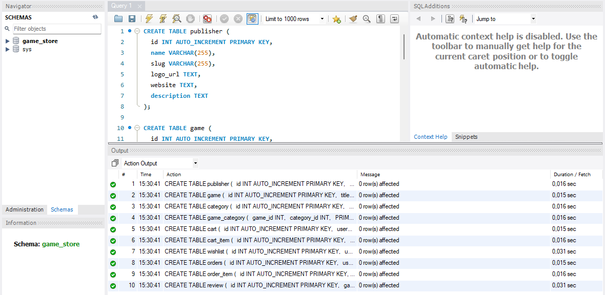
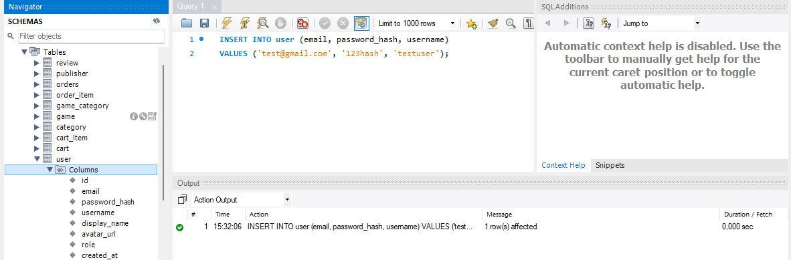
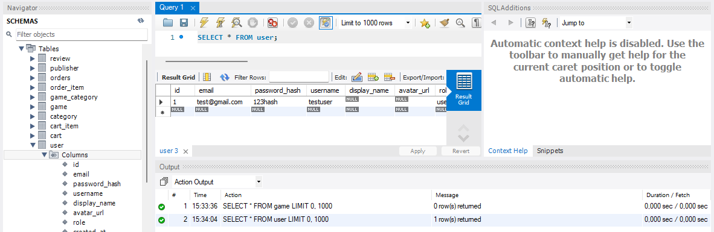
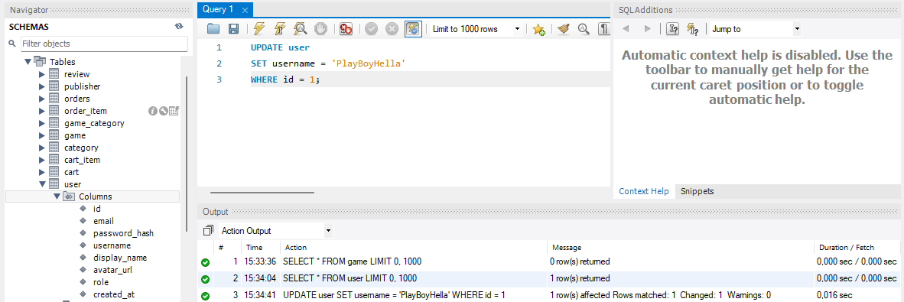
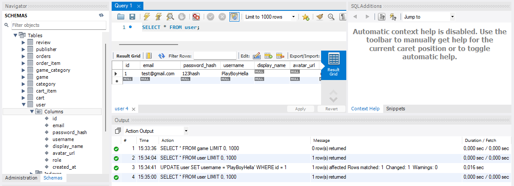
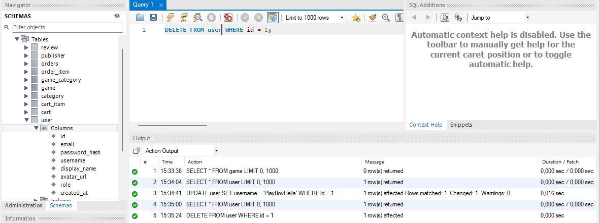
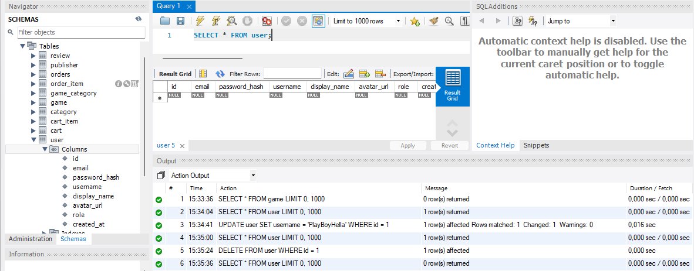

Встановлення підключення до локального сервера MySQL 8.0 та створення бази данних
Зображення

Створення таблиці user, publisher, category, game та інших у mySQL
Зображення


За допомогою SQL запитів (SELECT, INSERT, UPDATE, DELETE) ми подивились запис таблиць, додали запис, оновили запис та видалили запис за певними умовами
Зображення





